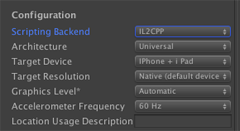

iOS 64-bit support is implemented with the scripting backend called IL2CPP. It runs with your C# code.
The IL2CPP runtime combines an ahead of time compiler with a virtual machine to convert assemblies to C++ while leveraging standard platform C++ compilers to produce native binaries. The net result is significantly higher performance, platform compatibility and maintainability.
IL2CPP is the only scripting backend to support deploying to ARM 64-bit on iOSApple’s mobile operating system. More info See in Glossary, and is thus mandatory to deploy to the Apple App Sstore for releasing new apps.
Select IL2CPPA Unity-developed scripting back-end which you can use as an alternative to Mono when building projects for some platforms. More info See in Glossary in the Scripting BackendA framework that powers scripting in Unity. Unity supports three different scripting backends depending on target platform: Mono, .NET and IL2CPP. Universal Windows Platform, however, supports only two: .NET and IL2CPP. More info See in Glossary drop-down menu in Player SettingsA settings manager that lets you set various player-specific options for the final game built by Unity. More info See in Glossary.

Scripting backend selection
By default it will build for Universal architecture (including both ARM64 and ARMv7); if needed you can switch to specific architecture in Player Settings. There are a number of things that should be done before your application is up and running in 64-bits:
You need a 64-bit capable device to test on: all iOS devices with A7 or later chip (currently these are: iPhone 5S, iPad Air, iPad Mini Retina, iPhone 6, iPhone 6 Plus, iPad Mini 3, and all newer devices).
You need all your native pluginsA set of code created outside of Unity that creates functionality in Unity. There are two kinds of plugins you can use in Unity: Managed plugins (managed .NET assemblies created with tools like Visual Studio) and Native plugins (platform-specific native code libraries). More info See in Glossary to be compiled with 64-bit support (or be provided as source code). If you are using a 3rd party plugin, you should contact your plugin vendor to obtain a 64-bit capable and IL2CPP-compatible version of that plugin. At the moment all latest Prime31 plugins should work.
If you are the plugin vendor or just have your own native pluginsA platform-specific native code library that is created outside of Unity for use in Unity. Allows you can access features like OS calls and third-party code libraries that would otherwise not be available to Unity. More info See in Glossary then you need keep couple of things in mind:
IL2CPP is not API-compatible (which is unexposed) with the Mono Runtime API, which means if plugin is using mono_* functions won’t link anymore. The best way to resolve this issue is to switch to a managed delegate/callback approach and pass your managed callbacks to the native side of plugin, and call them back from there when some native data or event arrives.
All plugins that come as precompiled static libraries (.a files) should now include ARM64 slice.
When doing native code/type conversion keep in mind that pointers and longs are now 64-bit wide and ints are still 32-bit wide.
To minimise generated amount of C++ code IL2CPP is always (even when Stripping level is set to Disabled) doing some sort of managed code stripping. Sometimes you will need to help it. Look for the link.xml guide in the iOS player size optimization manual.
Troubleshooting
Q: My code is running slower on IL2CPP than on Mono. Why?
A: Make sure you are testing your code performance in Xcode Release configuration. If issue still remains, please submit a bug report!
Q: Unity generated Xcode project fails to compile with following or similar error: Method not found: 'Default constructor not found...ctor() of System.ComponentModel.Int64Converter'.
A: Deserializers and serializers often reference some types only via .NET Reflection API and in such cases these methods or even classes might be stripped from the project. You can hint managed code stripper that specific class / method is used either via link.xml or via introduction of dummy code that explicitly references it in one of your scriptsA piece of code that allows you to create your own Components, trigger game events, modify Component properties over time and respond to user input in any way you like. More info See in Glossary.
Q: Unity generated Xcode project fails to compile with some other error.
A: Please verify that all your plugins support ARM64 and IL2CPP and if so, please submit a bug report and attach your project (or just the scripting part of it) to the bug report.
Is something described here not working as you expect it to? It might be a Known Issue. Please check with the Issue Tracker at issuetracker.unity3d.com.
Thanks for letting us know! This page has been marked for review based on your feedback.
If you have time, you can provide more information to help us fix the problem faster.
You've told us this page needs code samples. If you'd like to help us further, you could provide a code sample, or tell us about what kind of code sample you'd like to see:
You've told us there are code samples on this page which don't work. If you know how to fix it, or have something better we could use instead, please let us know:
You've told us there is information missing from this page. Please tell us more about what's missing:
You've told us there is incorrect information on this page. If you know what we should change to make it correct, please tell us:
You've told us this page has unclear or confusing information. Please tell us more about what you found unclear or confusing, or let us know how we could make it clearer:
You've told us there is a spelling or grammar error on this page. Please tell us what's wrong:
You've told us this page has a problem. Please tell us more about what's wrong:
Thanks for helping to make the Unity documentation better!